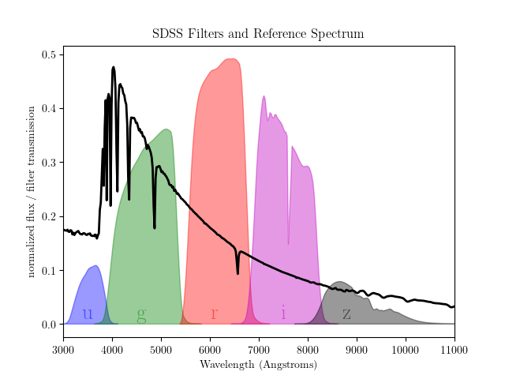

3. Data Sets¶
One of the major components of astroML is its tools for downloading and
working with astronomical data sets. The available routines are available
in the module astroML.datasets, and details are available in the
documentation of the functions therein. In this section we will summarize
some of the data sets made available by the code, and show some visualizations
of this data
3.1. Data Set Cache Location¶
The total size of the data sets is in the hundreds of megabytes, too large to be bundled with the astroML source distribution. To make working with data sets more convenient, astroML contains routines which download the data from their locations on the web, and cache the results to disk for future use.
For example, the fetch_sdss_spectrum() function
retrieves a data file from the SDSS data server. The file is stored
to disk in a location that can be defined by the user. The default location
is ~/astroML_data, and this default can be overridden by setting the
ASTROML_DATA environment variable. Any subsequent time the same function
is called, the cached version of the data is used automatically.
3.2. SDSS Data¶
Much of the data made available by astroML comes from the Sloan Digital Sky Survey (SDSS), a decade-plus photometric and spectroscopic survey at the Apache Point Observatory in New Mexico. The survey obtained photometry for hundreds of millions of stars, quasars, and galaxies, and spectra for several million of these objects. In addition, the second phase of the survey performed repeated imaging over a small portion of the sky, called Stripe 82, enabling the study of the time-variation of many objects.
SDSS photometric data are observed through five filters, u, g, r, i, and z. A visualization of the range of these filters is shown below:
3.2.1. SDSS Spectra¶
The SDSS spectroscopic data is available as individual FITS files, indexed by three
numbers: the plate, date, and fiber number. The fetch_sdss_spectrum()
takes a plate, mjd, and fiber, and downloads the spectrum to disk. The
spectral data can be visualized as follows:
As with all figures in this documentation, clicking on the image will link to a page showing the source code used to download the data and plot the result.
3.2.2. SDSS Photometry¶
The photometric data can be accessed directly using the SQL interface to the
SDSS Catalog Archive Server (CAS).
astroML contains a function which accesses this data directly using a Python SQL
query tool. The function is called fetch_sdss_galaxy_colors() and
can be used as a template for making custom data sets available with a
simple Python command. Some of the results are visualized below:

3.2.3. SDSS Corrected Spectra¶
The SDSS spectra come from galaxies at a range of redshifts, and have sections
of unreliable or missing data due to sky absorption, cosmic rays, bad detector
pixels, or other effects. AstroML provides a set of spectra which have been
moved to rest frame, corrected for masking using an iterative PCA reconstruction
technique (see Example of downloading and processing SDSS spectra), and resampled to
1000 common wavelength bins. The spectra can be downloaded using
fetch_sdss_corrected_spectra(); some examples of these are shown
below:

These data are used in several of the example figures from book_fig_chapter7.
Because these spectra are meant to enable high-dimensional classification and visualization routines, it is useful to have some extra classification data for these objects. One set of features available in the data set is the line ratio measurements. These can be visualized as shown below:

3.2.4. SDSS Spectroscopic Sample¶
Along with spectra, SDSS catalogued photometric observations of the objects
in the survey area. Those objects with both spectra and photometry available
provide a wealth of information about many classes of objects in the night
sky. The photometry from the SDSS spectroscopic galaxy sample is available
using the routine fetch_sdss_specgals(), and some of the attributes
are shown in the following visualization:

One well-known feature of the SDSS spectroscopic sample is the “great wall”,
a filament of galaxies located several hundred megaparsecs away. The
great wall data is among the spectroscopic sample: to enable easily working
with it, astroML contains the function fetch_great_wall(). The data
can be seen below:

3.2.5. SDSS DR7 Quasar Catalog¶
The SDSS has obtained the spectra of over 100,000 distant quasars. The quasar
catalog is described on the
SDSS website,
and can be downloaded using the function fetch_dr7_quasar(). Some of
this quasar data is used in the visualization below:

3.2.6. SDSS Imaging Sample¶
While the spectroscopically observed objects in SDSS offer a large number of
measured features for each object, the total number of observed objects of
each class (star, galaxy, quasar) is under one million. The full photometric
sample goes much deeper, and thus contains photometric measurements of
hundreds of millions of objects. astroML has a function called
fetch_imaging_sample() which loads a selection of this data. Some
of the returned attributes are visualized below:

3.2.7. SDSS Segue Stellar Parameters Pipeline¶
Several groups have produced various value-added catalogs which contain
additional observed features for objects in the SDSS database. One example
is the Segue Stellar Parameters Pipeline (SSPP), which makes available a
large number of additional object features derived from SDSS photometry
and spectra. This data can be downloaded using the function
fetch_sdss_sspp(). Some of the metallicity and temperature data is
visualized below:
The left panel shows the density of point on the temperature / log(g) plot.
These parameters correlate with the familiar HR diagram based on photometric
colors. The right panel shows the average metallicity in each pixel, and the
contours indicate the density of points.
Many more attributes are available in the SSPP data set; see the
fetch_sdss_sspp() documentation for details.
3.2.8. Stripe 82: Time Domain¶
During the second phase of the SDSS, the project repeatedly surveyed a small swath of sky known as Stripe 82. This yielded an unprecedented set of data in the time domain, which yielded insight into phenomena as wide-ranging as the orbits of asteroids, the variability of certain classes of stars, and the acceleration of the expansion of the universe.
astroML contains two datasets based on Stripe 82 data: one containing observations of RR-Lyrae stars, and one containing observations of moving objects (i.e. asteroids) within the solar system.
The RR-Lyrae data can be obtained using the fetch_rrlyrae_mags()
function, and result in the dataset visualized below:

The moving objects can be obtained using the fetch_moving_objects()
function, giving a dataset containing not only photometric observations,
but also orbital parameters. A portion of this information went into the
following visualization:


3.2.9. Stripe 82: Standard Stars¶
Along with time-domain data, the repeated observations in Stripe 82 enabled
stacked photometry of sources to minimize the statistical error in their
measured fluxes. The Stripe 82 standard stars are a set of stars in this
region which are below a specified variability criterion. The multiple
exposures were combined to yield a highly precise catalog of stars. This
data can be obtained using the fetch_sdss_S82standards() function.
Some of the data in this catalog is visualized below:

3.3. Combined Surveys¶
3.3.1. Nasa Sloan Atlas¶
The NASA Sloan atlas is a cross-matched catalog of
observations and parameters for nearby galaxies, compiled from SDSS, GALEX,
2MASS, annd WISE. The full dataset is ~500MB; an astroML dataset loader for
~50MB of this data is available in fetch_nasa_atlas(). The footprint
of the available data can be seen below:

3.3.2. Stripe 82 Standards + 2MASS¶
Above, we introduced the stripe 82 standard star catalog. There is also
a version of this catalog which is cross-matched with the 2 Micron All Sky
Survey (2MASS) data. This can be obtained using the
fetch_sdss_S82standards() function, with the keyword
crossmatch_2mass=True. Some of the combined data are shown below:
3.4. Time Domain Data¶
3.4.1. RR Lyrae Templates¶
RR Lyrae light curve templates can be useful when analyzing time-series data.
The function fetch_rrlyrae_templates() fetches the templates used in
1. The following is a figure from the textbook
that reconstructs one of these templates using a Fourier series:

The dashed line is the RR Lyrae template; the grey lines show the reconstruction with 1, 3, and 8 Fourier modes.
- 1
Sesar et al 2010, ApJ 708:717
3.4.2. LINEAR Light Curves¶
The Lincoln Near Earth Asteroid Research
(LINEAR) project, in existance since 1998, is designed to discover
and track near-earth asteroids. Its archive contains several million images of
the sky, and its combination of sensitivity and sky coverage has made it a
valuable resource to study time-domain astronomy, including variable stars.
astroML has two functions relating to the LINEAR sample:
fetch_LINEAR_sample() fetches light curves for over 7000 variable stars.
fetch_LINEAR_geneva() contains well-calibrated periods for a majority
of these. Phased light curves for six of the LINEAR objects can be seen in
the following figure. Here, the periods were found using a Lomb-Scargle
periodogram.

See chapter 10 of the text for a discussion of the mismatched period seen in the upper left object.
3.4.3. LIGO data¶
The Laser Interferometer Gravitaional-Wave Observatory (LIGO) is an effort to use laser interferometry to measure the
expansion and contraction of space predicted to be the result of gravitational
waves passing by earth. It is an example of a regularly sampled time series
with a very complicated noise frequency structure: this structure must be
understood to a high degree. astroML contains two loaders for LIGO-related
datasets. fetch_LIGO_large() fetches a large sample of LIGO data,
useful for characterizing the background noise of the survey.
fetch_LIGO_bigdog() contains the data associated with the
Big Dog Event, a
blind-injection test designed to measure the response of the instrument and
the survey team to a potential signal. The figure below shows an example of
using a Hanning filter to obtain the noise spectrum from the LIGO data:
3.5. WMAP temperature map¶
The WMAP project used a satellite to observed
the details of the fluctuations in the cosmic microwave background, and during
the last decade has led to unprecedented and ever-improving constraints on
fundamental constants of the universe. astroML contains a loader of the
WMAP data, using the routine fetch_wmap_temperatures(). Using the
healpy package, we can visualize the
raw WMAP data:


healpy also has some routines for computing fast spherical harmonic transforms. A rigorous treatment involves correcting for the mask pattern seen in the right image. Neglecting this correction, a simple power spectral analysis can be performed using the tools in healpy: